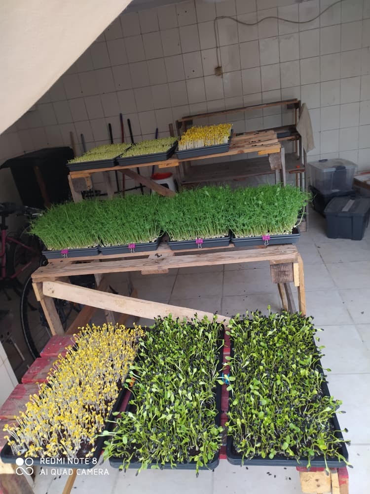
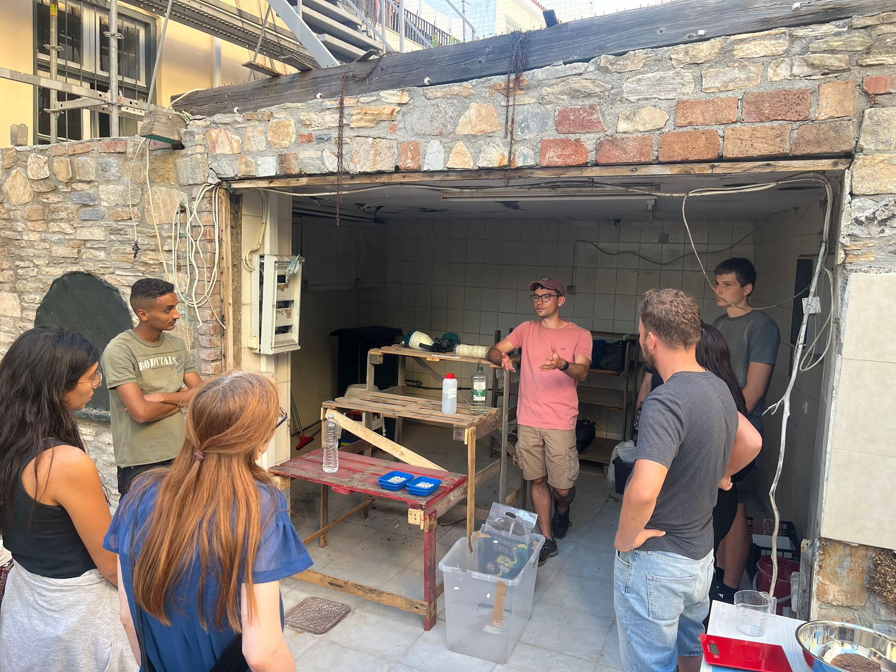

FSTS Pilot Newsletter, September 2025
Hi everyone,
Thank you for supporting this project from afar. Today marks exactly a month since I left Samos, and since then I have been putting together a report to document the learnings from the pilot. In this newsletter I’ll cover:
- Where things are at
- How the project is continuing without me on Samos
- Learnings from the end of the project + write-up
- Next steps
I've attached the draft report for anyone interested!
Where things are at
The pilot ended with me collating the results of the harvests and conducting interviews to understand how the community felt about eating microgreens. Some of the key results were:
- 2300 plates served (24.4kg of yield harvested)
- 74 - 94% as productive as commercial farms (varies by crop)
- 92.6% of people interviewed were keen to continue having microgreens form part of their diet (n=27)
- 6 community members were trained to run the farm
Additionally, assuming 2 servings of 10g per day, the daily cost of the program was $0.06 per day, or $1.80 per month. (*not including one-time costs)
Since wrapping up the pilot, I have been focusing on putting together a report to communicate its findings. This process has forced me to come to a conclusion about whether I actually would recommend microgreens farming for humanitarian actors to adopt. In short, I do think it is a worthwhile solution, but what’s out there already narrows the contexts in which it would be appropriate.
The report is mostly done, and a ‘toolkit’ is in the works. It's not been entirely a solo-effort either, I've had lots of comments and feedback on earlier drafts of the report which I've largely incorporated. I'm extremely thankful for the support I've gotten on that front.
This month I hope to meet academics and NGOs to get a sense of whether this solution is promising from their perspective, and based on those conversations decide whether I should keep pushing this project (microgreens and FSTS in general) forward.
How the project is continuing without me on Samos
Some time before I left Samos, La Maison (a food-distribution NGO) had approached me about building a small farm for them. I was excited by the prospect of expanding beyond Skills Factory, and pleasantly surprised to be getting ‘traction’ from a grassroots organisation.
As it happened, Skills Factory were not keen to continue with the project when I left, and so I reached out to La Maison to suggest that instead of building something new, if they paid for a truck I’d bring all the equipment over to set it up at their site. They agreed, and my last couple days were spent moving everything over and setting things up for them.
Mousa had been working with me for about 3 weeks at this point, and together we led a training session for La Maison’s volunteers to share about the process. Mousa was also offered a small stipend by La Maison to manage the farm, which I was incredibly pleased about (Skills Factory could not make the same offer). Now the farm continues to run - I am in a WhatsApp group with the team and it’s quite heartwarming to see Mousa helming the project. Every now and again I get to put on my ‘agronomist’ hat to respond to some questions around the farm schedule, but otherwise I don’t really have any involvement, and I think that’s good proof of concept!

(^photo from today)

(^Mousa and I running a training at La Maison)
Learnings from the end of the project + write-up
- Doing improbable things has its benefits
- Conventional wisdom would have suggested that it made no sense to be starting a microgreens farm at the height of the Greek summer, but doing it anyway meant that the pilot tested and demonstrated that microgreens farming is possible in hot environments.
- Being better-prepared
- It would have helped to have drafted a skeleton of the report before a pilot begins. I think I would have been clearer about what I needed the pilot to prove, and tailored the data that I recorded and the interview accordingly.
- Doing more research up-front would also have benefitted the pilot. For example, looking into alternative nutrition solutions from the get-go would have highlighted that vitamin C is important for iron absorption (+ anemia is a major challenge), quite difficult to fortify into foods, & even in specialised foods diminishes drastically when cooked. Had I known this I would have looked into picking crops that were higher in vitamin C.
- Finding the right people
- Things really clicked when I found the right people - in particular, being able to work with Mousa and Hind towards the end was such a blessing. Without a steady team it was difficult to get things going, but with people that showed initiative and curiosity, I felt at ease.
Next steps
The report is mostly complete, but I think I want to keep it ‘unfinished’ and start approaching NGOs and academics with it in draft to get their feedback and thoughts. I think this could help me write a better report + be a softer entry-point for having these conversations than having a finished product and sending it over to make the case for microgreens farming outright. As always - I've never done this before, so if this seems naive and not the right tact, please do feel free to share that!
The ‘how-to’ guide/ toolkit is on the other hand quite far from being finished. Nonetheless, while in Greece I had some tutorial videos shot because I thought that might be a better way of reaching organisations than a written document. You can find them here: https://www.youtube.com/@fromseedtoshelter
And finally, I need to start raising funds for the work that I’ve done so far. My total spend was just about $4000 USD for the 3 months (47% personal, 20% travel, 33% project), so that’s my target! If you can think of any individuals/ philanthropists/ family offices interested in making a large-ish contribution to support this type of project, do let me know and I can shoot across a document with a more formal ask.
Based on the response to the report from actors that I share it with + whether I’m able to raise funds for this pilot, I’ll make a call about whether it makes sense to continue with FSTS. That might be a decision for a future newsletter!
_______________________
Thank you so much for reading this.
Two quick things before I sign-off:
- If you do peruse the report and have any feedback, please don’t be afraid to share! It’s still a work in progress and your thoughts can only be helpful.
- I’m going to be in between a few cities in the US over the next month (DC, Boston, NY) - if you know anyone that might be keen to chat about this kind of thing in these cities, do let me know! I’m looking to speak to nutrition/ public health experts + humanitarian organisations (e.g., the IRC, WFP, FAO, UNHCR).
Thanks so much, and have a wonderful rest of your day!
Ben 🪣
21 October 2025